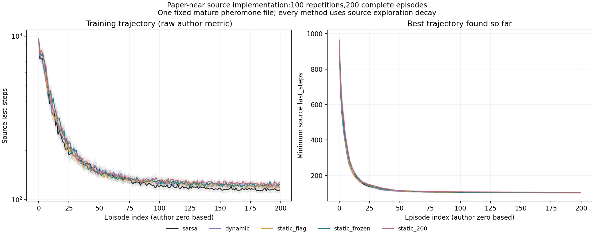
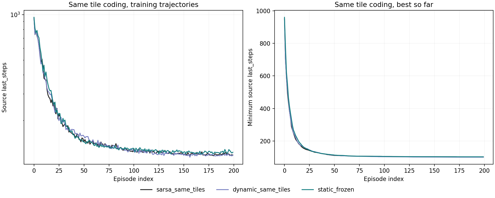

论文静态信息素效果复现尝试
100次主重复 · 200完整回合 · 固定成熟先验 · 作者完整学习函数
本轮主对照未复现论文的静态提前学习优势：真正冻结静态AIBS=90.95，SARSA=86.99，动态PA=81.57（均为100次重复，越小越好）。这是对可获得作者代码和重新生成先验的复现尝试，不能据此断定原论文错误。
一、这次对齐了什么
本轮仅检验论文表7的静态信息素效果。直接执行作者普通SARSA、HA、PA完整learn()；没有混合、探索反馈、自适应控制或另写TD循环。主队列100个新种子，每种200完整回合。
主环境直接使用Gymv0.10.5的MountainCar step/reset/seed函数体，目标x=.5，全部奖励-1，float64观察和float32观察边界，历史RandomState/hash随机数。具体原Gym版本未在论文说明，故它是有来源的历史近似。alpha=.5/10、gamma1、lambda.9、10x10tile与10层、rho.99。所有方法eps=.025，依作者脚本每步乘.99。
静态共用一份独立预训练HA导出的tau和配套原tile编码；调用作者两个setter。学生Q=0、资格迹=0、历史轨迹空、不复制老师Q或激活标志。保留作者原初始势、终止势、跨回合资格迹和成功判断。真正冻结版本只补一个局部dynamic判断，原静态开关另列。
二、先验是否比以前充分
| 文件 | 实际预训练回合 | 实际采样步数 | 稳定标准通过 | 最后100训练回合均值步数 | 最后100成功率 |
|---|---|---|---|---|---|
| historical_A | 1000 | 111259 | True | 104.01 | 100.0% |
| historical_B | 1000 | 114426 | True | 108.79 | 100.0% |
| historical_C | 1000 | 115362 | True | 109.11 | 100.0% |
| paper_text_A | 1000 | 116190 | True | 107.59 | 100.0% |
至少1000回合，每200回合检查训练表现平台，最多2000；具体标准在PROTOCOL.txt。通过只表示满足预设经验稳定条件，不等于理论收敛。教师种子事先固定，没有按学生成绩挑选。另保留同一老师200回合快照，主对照未将先验采集称为免费。
三、主队列与论文表7
下列ABS/AIBS/ATBS/ATST完全调用作者PlotResultsM3D.py的find_best_results：ABS=min(last_steps)，AIBS=argmin，从0计；ATBS按原脚本只累计最佳回合之前的耗时。它与“包含最佳回合的真正到达时间”不同，两者不能混称。普通SARSA/PA的last_steps是实际步数-1。
| 方法 | 论文ABS | 本机ABS | 论文AIBS | 本机AIBS | 论文ATBS秒 | 本机ATBS秒 | 本机ATST秒 |
|---|---|---|---|---|---|---|---|
| 作者SARSA | 103.2 | 101.87 | 96.8 | 86.99 | 10.0 | 3.66 | 8.05 |
| 作者动态PA | 102.2 | 103.98 | 89.0 | 81.57 | 15.0 | 7.22 | 15.30 |
| 真正冻结／成熟先验 | 101.4 | 103.04 | 75.0 | 90.95 | 14.0 | 7.04 | 13.95 |
| 方法 | 样本数 | ABS均值±原作者SEM | AIBS均值±原作者SEM | 学生交互均值 | 最终固定策略原始回报 | 最终固定策略成功率 |
|---|---|---|---|---|---|---|
| 作者动态PA | 100 | 103.98 ± 0.91 | 81.57 ± 4.61 | 34029 | -920.05 | 9.4% |
| 动态PA／同一tile编码 | 100 | 100.78 ± 0.93 | 101.48 ± 5.05 | 34285 | -792.33 | 24.6% |
| 作者SARSA | 100 | 101.87 ± 0.73 | 86.99 ± 5.21 | 33116 | -885.86 | 13.8% |
| SARSA／同一tile编码 | 100 | 101.90 ± 0.83 | 99.30 ± 4.94 | 34185 | -844.18 | 19.0% |
| 真正冻结／200回合先验 | 100 | 104.77 ± 1.03 | 98.99 ± 4.88 | 35534 | -787.64 | 25.6% |
| 作者原静态开关 | 100 | 101.49 ± 1.12 | 104.93 ± 5.51 | 34301 | -819.22 | 21.5% |
| 真正冻结／成熟先验 | 100 | 103.04 ± 0.86 | 90.95 ± 4.79 | 35261 | -758.72 | 28.6% |
原作者打印的Interval在公开脚本中是std/sqrt(n)，因此这里明确标作SEM；配对区间另用bootstrap95%。曲线未平滑。绝对运行时间受硬件、8进程和等价tile投影优化影响，不用来声称复现论文的秒数。最终策略栏是另做10个固定起点的原作者act(eps=0)评估，不替代训练中的最好轨迹指标。

四、静态加速是否出现
本轮主对照未复现论文的静态提前学习优势：真正冻结静态AIBS=90.95，SARSA=86.99，动态PA=81.57（均为100次重复，越小越好）。这是对可获得作者代码和重新生成先验的复现尝试，不能据此断定原论文错误。
同一老师的200回合先验和成熟先验，静态AIBS均值分别为98.99和90.95。均值差及统计支持以配对表为准；区间跨零不构成加速证据，也不能反过来证明静态必然更差。
{
"conditional_prior": "historical_A",
"lower_mean_AIBS_than_both": false,
"no_worse_mean_ABS_than_both": false,
"AIBS_both_Holm_p_below05": false,
"numeric_reproduction_of_original_static_file": false
}
差值定义为真正冻结静态减相应基线，负数较好。两项主比较×ABS/AIBS共4项Holm；置信区间是100个学生种子的配对bootstrap，只条件于固定先验A，不代表不同先验之间的全部不确定性。
| 比较 | 指标 | 均值差 | 配对95%区间 | 4项Holm p |
|---|---|---|---|---|
| static_frozen__minus__sarsa | ABS | +1.170 | [-1.15, 3.48] | 1.00000 |
| static_frozen__minus__sarsa | AIBS | +3.960 | [-8.9, 16.76] | 1.00000 |
| static_frozen__minus__dynamic | ABS | -0.940 | [-3.48, 1.53] | 1.00000 |
| static_frozen__minus__dynamic | AIBS | +9.380 | [-3.41, 22.03] | 0.61231 |
五、固定编码与先验文件敏感性
sarsa_same_tiles、dynamic_same_tiles只使用老师的随机tile布局，不加载训练信息素。这能判断单份静态文件的优势是否同时来自特征布局。下列匹配编码比较属于预设诊断，其区间不与主检验混合。
由于AIBS追踪的是各方法自己的最佳轨迹，目标质量不相同，同编码对照仍需结合ABS、区间和完整曲线判断，不能单凭AIBS均值宣布加速。
| 同编码比较 | ABS差 | AIBS差 | AIBS配对95%区间 |
|---|---|---|---|
| sarsa_same_tiles | +1.140 | -8.350 | [-21.85, 5.14] |
| dynamic_same_tiles | +2.260 | -10.530 | [-24.03, 3.23] |
| 独立先验 | 学生n | ABS均值 | AIBS均值 | 最终原始回报 |
|---|---|---|---|---|
| historical_A | 100 | 103.04 | 90.95 | -758.72 |
| historical_B | 30 | 104.07 | 95.27 | -966.33 |
| historical_C | 30 | 107.97 | 98.47 | -936.73 |
B/C是另外两个事先指定的老师，分别30次学生训练。B/C共用22000起始学生种子，A主实验使用20000起始种子，因此A与B/C间差异还包含学生样本流差异，不能全归因于文件。它们不能合并成“300个独立先验”；只有3份历史环境先验。

六、论文文字／代码歧义对照
论文文字写目标x=.6、到达奖励+1；公开MountainCar脚本调用Gym默认环境，目标x=.5、全程-1。这里另有paper_text环境，只更改目标和终点奖励，动力学仍按作者mc_model及旧Gym的先更新速度再更新位置。
论文式38是rho*Pnext-Pold；公开PA TrueOnline是(gamma*Pnext-Pold)/10。原式对照只替换这一行，不选择额外scale。其余源码行为不变，所有20种子结果都保留；不是筛出赢家后替换主基线。
| 环境/公式 | 方法 | 学生n | ABS | AIBS | 训练最后20回合回报 | 最终固定策略回报 |
|---|---|---|---|---|---|---|
| historical__eq38 | sarsa | 20 | 104.10 | 89.95 | -119.33 | -917.98 |
| historical__eq38 | dynamic | 20 | 108.70 | 68.80 | -154.56 | -965.00 |
| historical__eq38 | static | 20 | 124.65 | 89.30 | -185.69 | -716.23 |
| paper_text__source | sarsa | 20 | 105.55 | 77.90 | -120.33 | -1000.00 |
| paper_text__source | dynamic | 20 | 106.50 | 68.35 | -124.47 | -944.24 |
| paper_text__source | static | 20 | 116.10 | 91.60 | -135.51 | -799.68 |
| paper_text__eq38 | sarsa | 20 | 105.55 | 77.90 | -120.33 | -1000.00 |
| paper_text__eq38 | dynamic | 20 | 109.45 | 87.45 | -146.59 | -948.46 |
| paper_text__eq38 | static | 20 | 150.85 | 85.00 | -195.99 | -609.37 |
七、成本、来源和完整性
正式学生训练920次，教师4次，训练交互总数33,233,539。先验A一次采集111,259步。单个冷启动任务应加上全部先验成本；复用100次时可另外报摊销，不能将学生提前找到轨迹直接说成总成本下降。
{
"source_hashes_match": true,
"all_200_complete": true,
"all_finite": true,
"author_metrics_exactly_recalculated": true,
"loaded_prior_and_coders_verified": true,
"deserialized_coder_hashes": {
"historical_A__e200": "735aa8f7a32f07d5661a01c01885a77a0947aed621eb4fdd531776907a6205b3",
"historical_A__mature": "735aa8f7a32f07d5661a01c01885a77a0947aed621eb4fdd531776907a6205b3",
"historical_B__e200": "afd88d97ad871cf5656b45893363f752298cf8625a7a9001bcb5c52f1c3741f6",
"historical_B__mature": "afd88d97ad871cf5656b45893363f752298cf8625a7a9001bcb5c52f1c3741f6",
"historical_C__e200": "f435e56743ce8c5c34199e4e6789e4075183e0047ac4939e7c19bf8142ddad6d",
"historical_C__mature": "f435e56743ce8c5c34199e4e6789e4075183e0047ac4939e7c19bf8142ddad6d",
"paper_text_A__e200": "e309bff092d3fdf60c12a6d671319dd5c9e415383d6e820ee7e0d657d6d9bd59",
"paper_text_A__mature": "e309bff092d3fdf60c12a6d671319dd5c9e415383d6e820ee7e0d657d6d9bd59"
},
"pickle_reencoding_byte_changes": [
"historical_A__e200",
"historical_A__mature",
"historical_B__e200",
"historical_B__mature",
"historical_C__e200",
"historical_C__mature",
"paper_text_A__e200",
"paper_text_A__mature"
],
"coder_geometry_reconstructed_from_teacher_seed": true,
"frozen_versions_unchanged": true,
"all_rewards_verified": true,
"physical_student_steps": 32776302,
"physical_teacher_steps": 457237
}
原静态pickle未在所查固定提交中找到，文件提交历史查询及releases也未找到对应分发。我们重新生成，不能声称取得作者原文件。原示例脚本当前选用另一APHARS模型，本轮明确执行其公开PA backward类，不声称整份示例脚本原封运行。
论文：https://link.springer.com/content/pdf/10.1007/s10732-019-09408-x.pdf；作者代码：https://github.com/SB-BISS/RLACOSarsaLambda/tree/95786b39b9ee8c5e004e71ccfa790304cbb3f684；旧环境：https://github.com/openai/gym/blob/v0.10.5/gym/envs/classic_control/mountain_car.py。
结果：results/runs、models、priors、teachers；源码：paper_author、gym_legacy；明确差异：PA_*.patch；计划：PROTOCOL.txt；原作者统计函数：author_metrics.py；全部统计：summary.json。